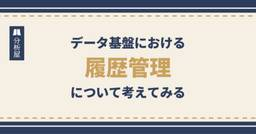

分析屋
https://note.com/bunsekiya_tech
★★ロゴが新しくなりました★★ 株式会社分析屋です。神奈川県で、データ分析の支援・代行を行っています。 今日のランチから企業の意思決定まで、 データ分析で最適解をご提供するために、蓄積したあらゆる面での技術をご紹介しております。 https://analytics-jp.com
フィード

こんな勉強法はNG！～基本情報技術者試験ギリギリ合格体験記～
分析屋
こんにちは。SAC部の東口です。この度、基本情報技術者試験に合格点スレスレで合格しました。合格こそしたものの、振り返ってみれば効率の良くない勉強法をしてしまいました...反面教師の勉強法として参考にしていただければと思います(笑)。以下では、私の勉強法と反省点のほか、試験会場で使えるものや注意事項なども書いてます。続きをみる
1日前

自身の過去のブログを実験台に Google検索のランキングアルゴリズムの仕組みを考察する
分析屋
どうも、アルゴリズムオタクの「タニモツ」です。4ヵ月程前に初ブログ「エンジニア1年目の苦労と学び」を公開しました。タイトルの通り未経験からエンジニア転職して1年目で苦労しまくった体験談です。続きをみる
3日前
炎上してから人を増やしても、 プロジェクトは早く終わらない。データが示す「三乗根の法則」
分析屋
こんにちは、分析屋の柵木です。「このままだと納期に間に合いません。人を増やせませんか？」続きをみる
5日前

データ基盤における「履歴管理」について考えてみる 1
1
分析屋
こんにちは。分析屋の伊藤です。私はこれまで、データ分析に関わる業務をいくつか経験し、現在はデータ基盤構築に関するプロジェクトに参画しています。今回は、業務の中で改めて意識するようになった「データの履歴をどう残すか」というテーマについて考えてみたいと思います。続きをみる
6日前

チャット型AIライブラリ「Chainlit」のすすめ
分析屋
はじめまして、分析屋の河田です。今年の7月から生成AI使用案件に参画しています。案件ではAzure OpenAIを使用するということで、実際にAIエージェントを使用するシステムを自作してみる等、自主学習を進めていました。続きをみる
8日前
Streamlitで自分の歩数データを可視化してみた
分析屋
こんにちは、分析屋 BI推進部のCです。普段は主にPowerBIでデータの可視化や意思決定の助けとなるレポートの作成業務に携わっています。最近は他のツールにも興味があり、HTML+CSSで簡単なWebアプリを作ってみたりしていたのですが、PythonだけでWebアプリを簡単に作れるStreamlitというライブラリの存在を知り、勉強し始めています。続きをみる
11日前
統計検定2級対策 数式まとめ ～平均・分散・共分散・相関係数編～
分析屋
初めまして。AIビジネス部の佐渡と申します。現在統計検定2級を勉強しています。大学院で生物系の実験の際にt検定など統計を使っていたので、簡単に取れると思っていました。ところがいざ始めてみると、序盤の時点で同じ言葉で異なる式が複数登場して困惑したり、式自体は知っているはずなのに問題は解けなかったり、思いのほか理解に時間がかかってしまいました。特に同じ言葉を使っていても式の使いどころが違う場合もあり、式の選び方が難しいと感じました。続きをみる
12日前
Udemyのサブスクを3ヶ月使って気づいた。「サブスクか買い切りか」という問いは間違っていた
分析屋
分析屋の柵木です。仕事柄、常に新しい技術スタックや知識のキャッチアップを求められることもあり、日頃からUdemyには大変お世話になっています。そんな中でふと疑問に思ったのが、「サブスクと買い切り、結局自分にはどちらがいいのだろう？」ということでした。ネットで検索すると、「サブスクの方がお得」「◯講座以上受講するならサブスク」といった比較記事は数多く見つかります。料金や講座数を比較した情報も多く、一見するとそれだけで判断できそうに思えました。続きをみる
16日前
【徹底解説】Power BIの「行レベルセキュリティ（RLS）」とは？－仕組みから実装方法まで－
分析屋
企業内でデータ活用が進むにつれ、「誰に・どのデータを見せるべきか」というデータガバナンスの課題が必ず発生します。Power BIには、この課題を解決するための強力な機能である「行レベルセキュリティ（RLS：Row-Level Security）」が標準で備わっています。ですが、実はまだあまり広く使われていない機能のような気もしています。初めて聞く方も「こんな機能があるんだ」と頭の片隅に入れておくと、いざというときにスマートなPower BI開発ができるかもしれません。続きをみる
17日前
AWSの新認定AI Business Strategist受けてみた
分析屋
AWSの新認定AI Business Strategistのベータ試験が2026年9月29日（火）から提供開始されました。これまでのAWS認定はビルダー（設計や構築や運用を行うエンジニア）を対象にしたものでした。一方、この認定は「ビルダーと共に AI 導入を推進する方向け」とのことで、ビジネス上の意思決定を対象にした認定とのことです。私はビルダー側なので直接的な対象者ではないと思いますが、今後のキャリアの幅が広がりそうなので善は急げと公開後の最初の休日の10月3日（土）に受けて合格しました。続きをみる
24日前
Snowflake TaskでPower BI用データマート更新を自動化した実務事例
分析屋
こんにちは。分析屋のMKです。普段はデータ分析基盤の構築や、BIダッシュボードの開発・データ分析を担当しています。続きをみる
1ヶ月前
PoCを通して見えた、技術選定で重視すべき5つの視点
分析屋
分析屋の柵木です。今回は、Google Cloudでジョブオーケストレーションを検討する際に候補となる、Cloud ComposerとCloud Workflowsについて紹介します。どちらも処理の流れを制御するサービスですが、その設計思想や得意分野は大きく異なります。続きをみる
1ヶ月前
統計検定データサイエンス（基礎と発展）の受験体験記
分析屋
みなさん、こんにちは。分析屋AIビジネス部のIです。弊社の社員がブログでいろんなことを発信しているようで、私も何か書けたらいいなと思い、書いてみようと思ったのが資格取得でした。続きをみる
1ヶ月前
SnowflakeのQUALIFY句とは？実務で使って分かった便利さと使いどころ
分析屋
こんにちは。分析屋のMKです。普段はデータ分析基盤の構築や、BIダッシュボードの開発・データ分析を担当しています。続きをみる
1ヶ月前
【決定版】「Ollamaを入れたけどGemmaしか使ってない」を卒業！ビジネスで今すぐ使えるOllamaで使えるAIモデルまとめ
分析屋
「ローカルLLMなら会社の機密情報も安全に処理できる！」「自分のパソコンでAIが無料で動くなんて凄そう！」そう思って、気合を入れてローカルLLM実行ツール「Ollama」をインストールしたビジネスパーソンの皆さん、こんにちは分析屋の池田です。続きをみる
1ヶ月前
データフロー初心者が躓いたエラー
分析屋
はじめまして！BI推進部の髙野です。今回は、私が案件で学んだPower BI Serviceの「データフロー（Dataflow）」という技術について、実際に業務で直面し、躓いたエラーとその対処法を紹介しようと思います。続きをみる
1ヶ月前
Pythonで描くアートの世界——コードと偶然から生まれた7つの作品
分析屋
こんにちは。データ利活用I部の田代です。Pythonと聞くと、データ分析、機械学習、業務の自動化などを思い浮かべる人が多いと思います。私自身も、普段の業務ではPythonを「データを処理するための言語」として使っています。続きをみる
1ヶ月前
AI Coding Agentの活用 with GitHub Copilot ーPart2ー
分析屋
株式会社分析屋の大谷津です。よろしくお願いいたします。前回は、GitHub Copilot活用記事のPart1として、GitHub Copilotの紹介と、GitHub CopilotのInline suggestions（コード補完）機能の活用について書かせていただきました。続きをみる
2ヶ月前
Google Cloud認定資格をオンラインで更新する際の注意点まとめ
分析屋
分析屋の町田です。2026年7月から、一部のGoogle Cloud認定資格（PCA、PDE、ACE、CDL）が試験無し・オンライン完結で更新できるようになりました。続きをみる
2ヶ月前
「エンジニアの読解力」について考える
分析屋
こんにちは。データ利活用I部の田代です。最近、生成AIの進化を、日々の仕事の中で強く感じています。少し前まで、エンジニアの価値の中心は「コードを速く、正確に書けること」だったかと思います。けれど今は、書く作業そのものはAIがかなりの部分を引き受けてくれるようになっています。続きをみる
2ヶ月前
精度99％の落とし穴
分析屋
こんにちは！分析屋の駆け出しDS（データサイエンティスト）サラリーマンです。さて今回も統計に関するコラムを書きたいと思います！今回のテーマは基準率の誤謬（ごびゅう）です。聞きなじみのない言葉で「ん？なんだそれ」と思われる方もいらっしゃるかもしれません。精度99％のAIを例に挙げて説明していきますのでご安心を！続きをみる
2ヶ月前
【Excel VBAで、もっと効率化！】バックアップツール編③ どのExcelからでも使える！バックアップツールをアドイン化しよう
分析屋
こんにちは。分析屋 業務効率化チームのKです。今回は、バックアップツール編の第3回です。第2回で作成したツールをアドイン化します。続きをみる
2ヶ月前
AIを「使う人」から「マネジメントする人」へ――『部下としてのAI』を読んで思ったことをまとめてみた
分析屋
分析屋のSです。今回は、最近読んで衝撃を受けた『部下としてのAI 世界一流エンジニアの進化術』から、これからのAI時代に必須の考えだと感じたことを３つに絞ってまとめてみました。続きをみる
2ヶ月前